Tutorials
教程
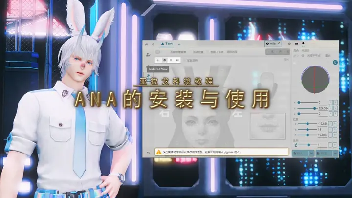
置顶 ANA 的安装与使用 置顶 brio 的使用技巧 置顶 旋转吧大喵 · 4k 拍照插件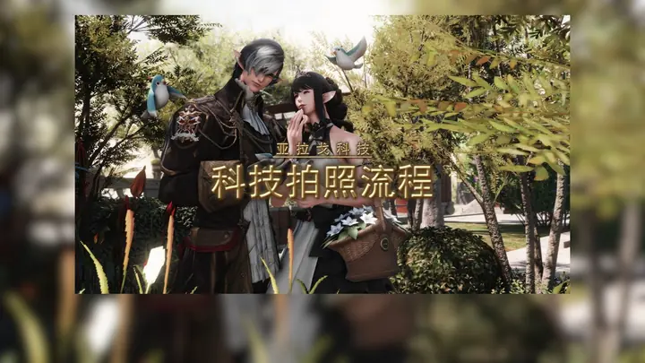
科技拍照流程
旋转吧大喵 · 4k 拍照插件
同步动作：怼脸慢呼吸
模型幼年体
我用的啥美化
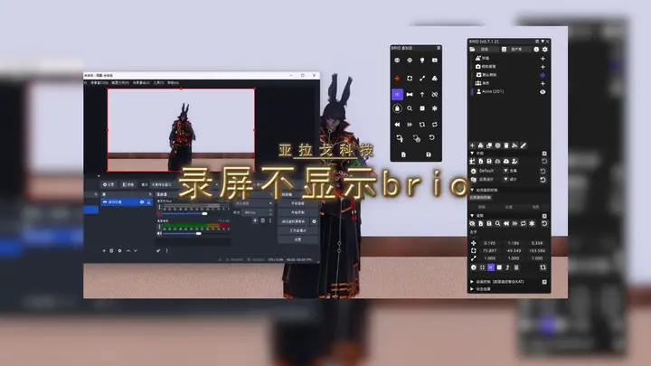
录屏不显示 brio
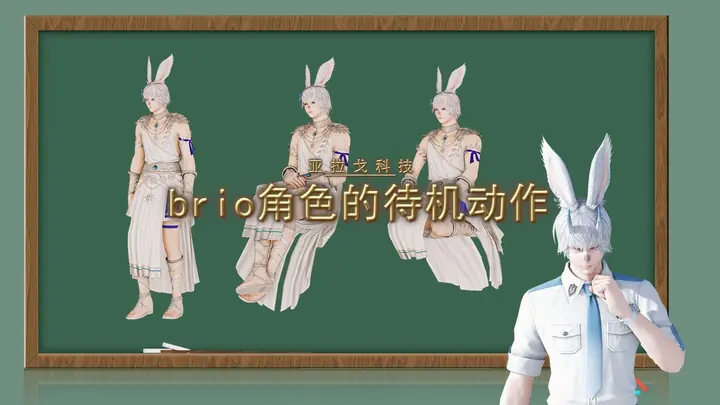
brio 角色的待机动作
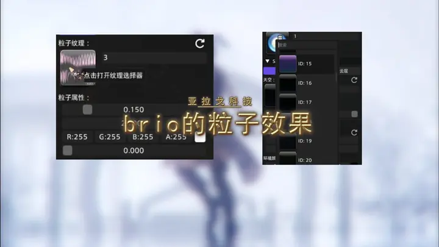
brio 的粒子效果
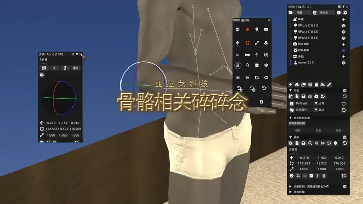
骨骼相关碎碎念
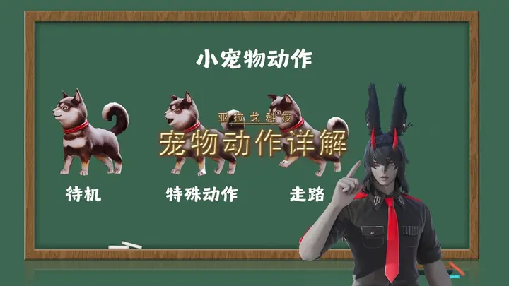
宠物动作详解
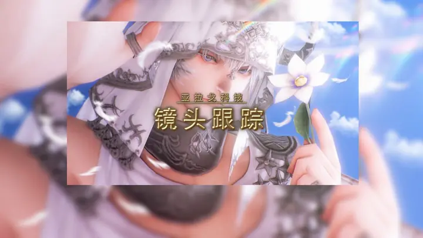
镜头跟踪
简单溶图（PS 教学）
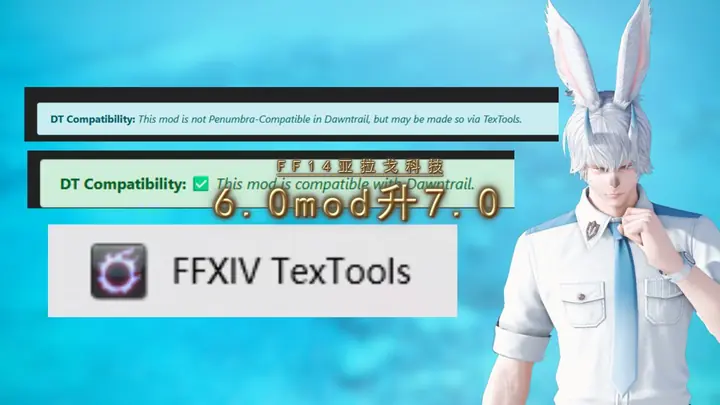
6.0 mod 升 7.0
GLA 的自由染色
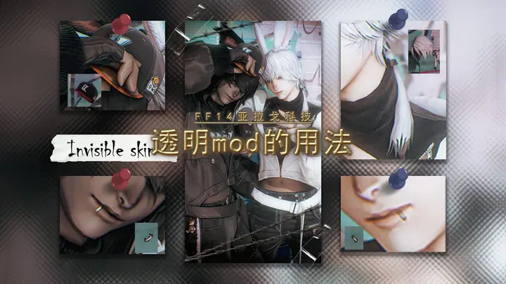
透明 mod 的用法
红卫月转蓝卫月教程
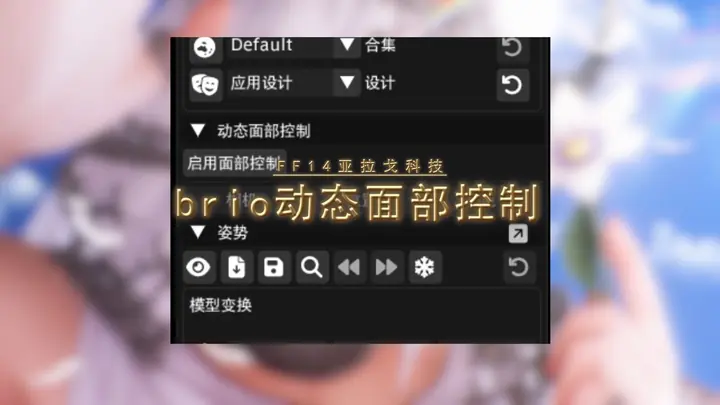
brio 动态面部控制
Brio 的灯光
ana 和 brio 的保存
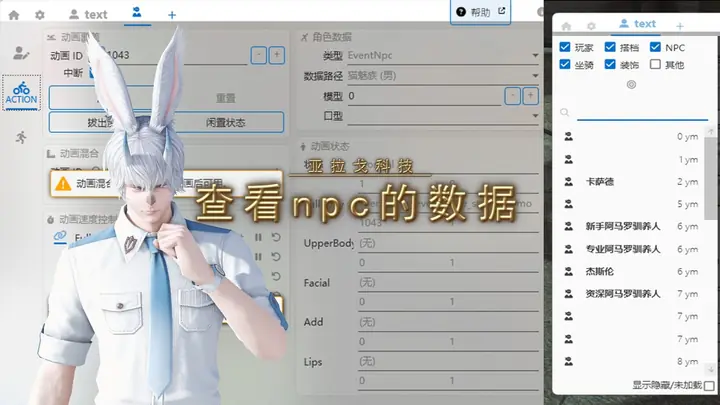
查看 NPC 的数据
简单组装可爱小物
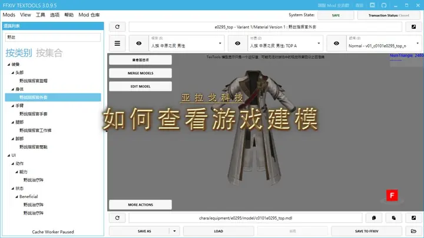
如何查看游戏建模
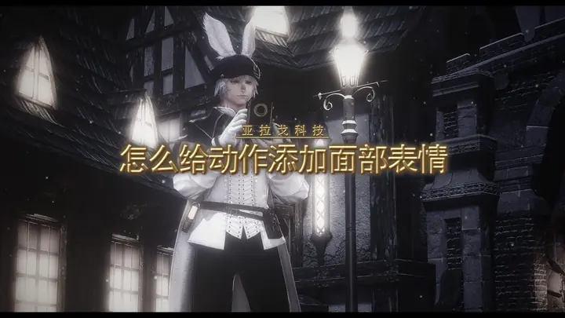
怎么给动作添加面部表情
如何使用主手道具
怎么变成小蛋糕
新发现的小技巧
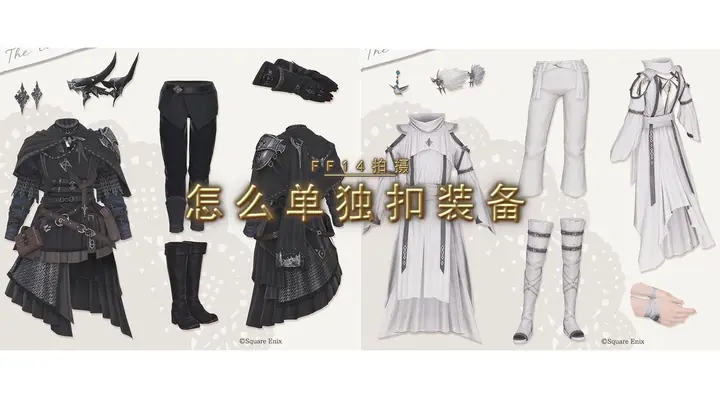
怎么单独扣装备
怎么拍透明底 S
如何拍摄头部跟踪
怎么把数据发给约拍
怎么拍第一人称
如何添加宠物 NPC 配饰
第一人称图拆解 1.0
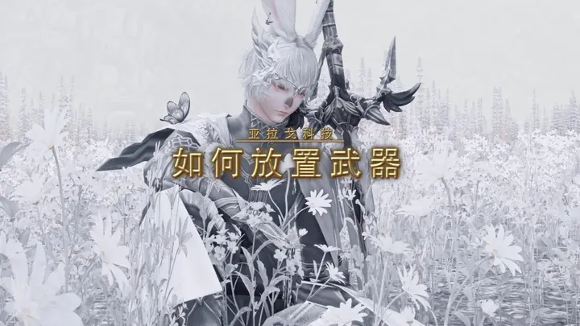
如何放置武器
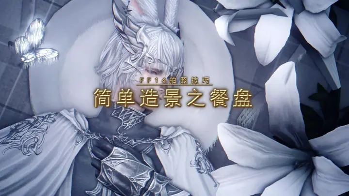
简单造景之餐盘
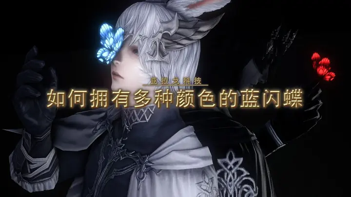
如何拥有多种颜色的蓝闪蝶
30s 速通 4k 拍照
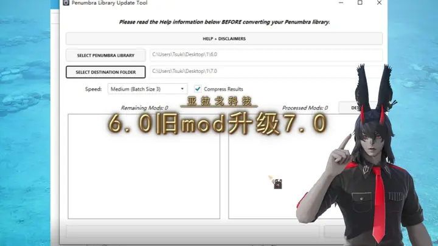
6.0 旧 mod 升级 7.0
ANA 的常见问题解答
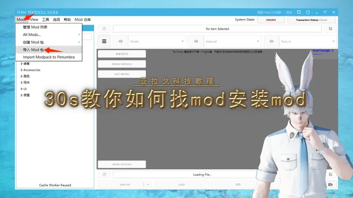
30s 教你如何找 mod 安装 mod
ANA 的安装与使用
brio 的使用技巧
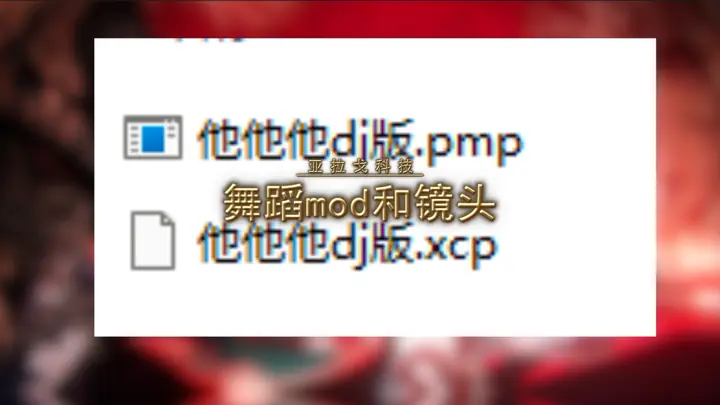
舞蹈 mod 和镜头（他他他 dj 版）
这个分类还没有教程。